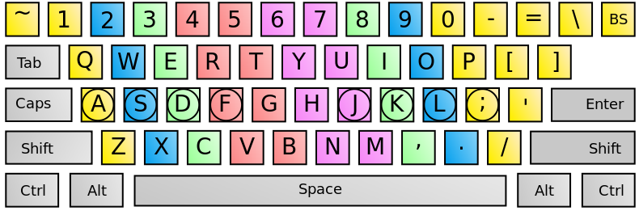

this is a game that combines virtual piano and speed typing practice
player would choose a background music and try to type as fast and accurate as possible to increase their typing speed
HOW TO PLAY:
- first choose a music from the list
- type the word displayed in screen into the input box
- continue to do so until the music stops
- try your best and type as fast as you can to improve your speed
some helpful things:
to help you memorize the keyboard, I have included the keyboard with corresponding fingerings: 